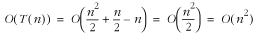

4.4 Analysis Example: Insertion
Sort
This section presents an analysis of the
worst-case running time of insertion sort, a simple
sorting algorithm that works by inserting elements into a
sorted set by scanning the set to determine where each new
element belongs. A complete description of insertion sort
appears in Chapter
12. The code for the sort is shown in Example
4.1.
We begin by identifying which lines of code
are affected by the size of the data to be sorted. These are the statements that
constitute the nested loop, whose outer part iterates from 1
to size - 1 and whose inner part iterates from
j - 1 to wherever the correct position for the
element being inserted is found. All other lines run in a
constant amount of time, independent of the number of elements
to be sorted. Typically, the generic variable n is used to refer to the parameter
on which an algorithm's performance depends. With this in
mind, the outer loop has a running time of T (n)
= n - 1, times some constant
amount of time. Examining the inner loop and considering the
worst case, we assume that we will have to go all the way to
the other end of the array before inserting each element into
the sorted set. Therefore, the inner loop iterates once for
the first element, twice for the second, and so forth until
the outer loop terminates. Effectively, this becomes a
summation from 1 to n - 1,
which results in a running time of T
(n) = (n (n +
1)/2) - n, times some constant
amount of time. (This equation is from the well-known formula
for summing a series from 1 to n.) Consequently:

Example 4.1.
Implementation of Insertion Sort from Chapter
12 /*****************************************************************************
* *
* ------------------------------- issort.c ------------------------------- *
* *
*****************************************************************************/
#include <stdlib.h>
#include <string.h>
#include "sort.h"
/*****************************************************************************
* *
* -------------------------------- issort -------------------------------- *
* *
*****************************************************************************/
int issort(void *data, int size, int esize, int (*compare)(const void *key1,
const void *key2)) {
char *a = data;
void *key;
int i,
j;
/*****************************************************************************
* *
* Allocate storage for the key element. *
* *
*****************************************************************************/
if ((key = (char *)malloc(esize)) == NULL)
return -1;
/*****************************************************************************
* *
* Repeatedly insert a key element among the sorted elements. *
* *
*****************************************************************************/
for (j = 1; j < size; j++) {
memcpy(key, &a[j * esize], esize);
i = j - 1;
/**************************************************************************
* *
* Determine the position at which to insert the key element. *
* *
**************************************************************************/
while (i >= 0 && compare(&a[i * esize], key) > 0) {
memcpy(&a[(i + 1) * esize], &a[i * esize], esize);
i--;
}
memcpy(&a[(i + 1) * esize], key, esize);
}
/*****************************************************************************
* *
* Free the storage allocated for sorting. *
* *
*****************************************************************************/
free(key);
return 0;
}
|